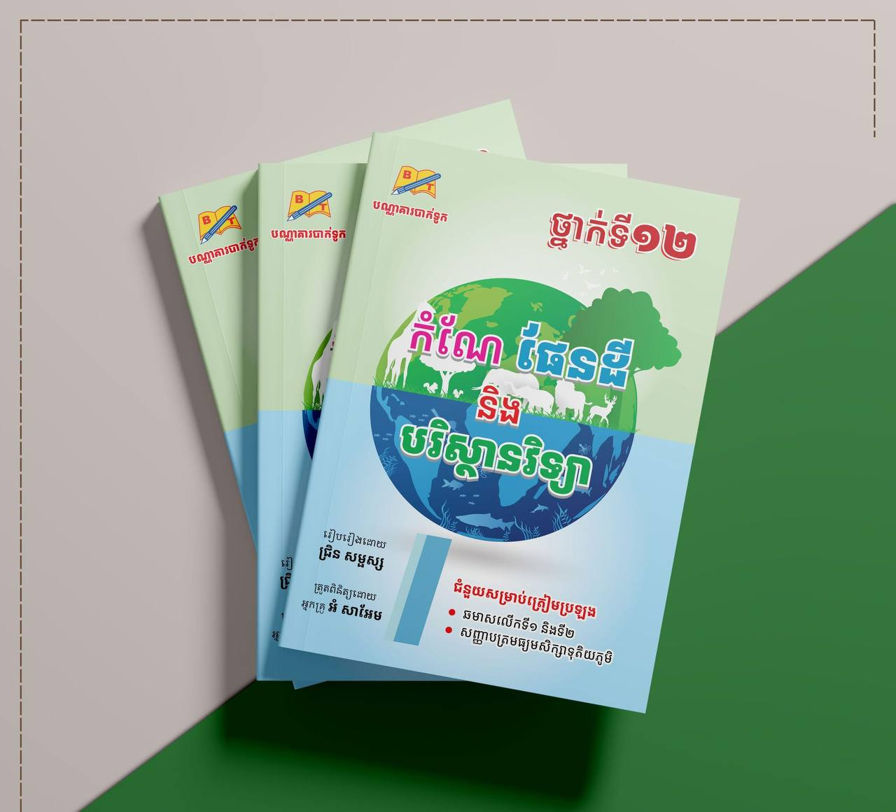

Contact Us

bookshop

bookshop@gmail.com

Phnom Penh
Social Media

Neng Development

@Huonneng111222

@hun.neng5
ការយល់ដឹងអំពីអត្ថប្រយោជន៍នៃសៀវភៅកំណែផែនដីគឺសំខាន់ណាស់ ដោយសារតែវាជាផ្នែកមួយនៃការអប់រំបែបពិតប្រាកដ និងអភិវឌ្ឍចំណេះដឹងជីវិត។ អត្ថប្រយោជន៍សម្រាប់សិស្សមានដូចជា៖

1. បង្កើនចំណេះដឹងផ្នែកច្បាប់ និងអចលនវត្ថុ
សិស្សសិក្សាបានយល់អំពីសិទ្ធិជាម្ចាស់ដី តួនាទីសៀវភៅកំណែផែនដី និងតម្រូវការផ្លូវច្បាប់ក្នុងការ
ទទួលកាន់កាប់ដីធ្លី។
2. រៀនពីភាពសំខាន់នៃសម្បត្តិជាតិ និងផែនទី
ការសិក្សាពីកំណែផែនដីជួយឲ្យសិស្សស្គាល់ពីផែនទី ជ្រាបពីប្រភេទដី និងការរក្សាទុកធនធានជាតិ
បានល្អប្រសើរ។
3. បង្កើនចំណេះដឹងផ្នែកសេដ្ឋកិច្ច និងទំនួលខុសត្រូវជីវិត
សៀវភៅកំណែផែនដីជាឧបករណ៍សំខាន់សម្រាប់កសាងអាជីវកម្ម ឬវិនិយោគ។ សិស្សអាចយល់អំពី
តម្លៃនៃសម្បត្តិ និងវិធីប្រើប្រាស់វាដោយមានផែនការរស់នៅអនាគត។
4. បណ្តុះបណ្តាលទំនួលខុសត្រូវ និងសីលធម៌
ឲ្យសិស្សរៀនពីសិទ្ធិ និងកាតព្វកិច្ចក្នុងការកាន់កាប់ដីធ្លី ដើម្បីប្រើប្រាស់ជាសមរម្យ និងមិនរំលោភ
សិទ្ធិអ្នកដទៃ។
5. ជួយក្នុងការស្រាវជ្រាវ និងគម្រោងសិក្សា
សិស្សអាចយកប្រធានបទនេះទៅធ្វើជាគម្រោងសិក្សា ឬស្រាវជ្រាវអំពីការគ្រប់គ្រងដីធ្លីជាផ្នែកមួយ
នៃមុខវិជ្ជាប្រវត្តិសាស្ត្រ ឬភូមិសាស្ត្រ។
សេចក្តីសន្និដ្ឋាន៖ សៀវភៅកំណែផែនដីមិនមែនគ្រាន់តែសំខាន់សម្រាប់មនុស្សពេញវ័យទេ ប៉ុន្តែ
សិស្សក៏គួរតែយល់ដឹងដែរ ដើម្បីចូលរួមទទួលខុសត្រូវលើអនាគត និងសង្គមរួម។
bookshop
bookshop@gmail.com
Phnom Penh
Neng Development
@Huonneng111222
@hun.neng5